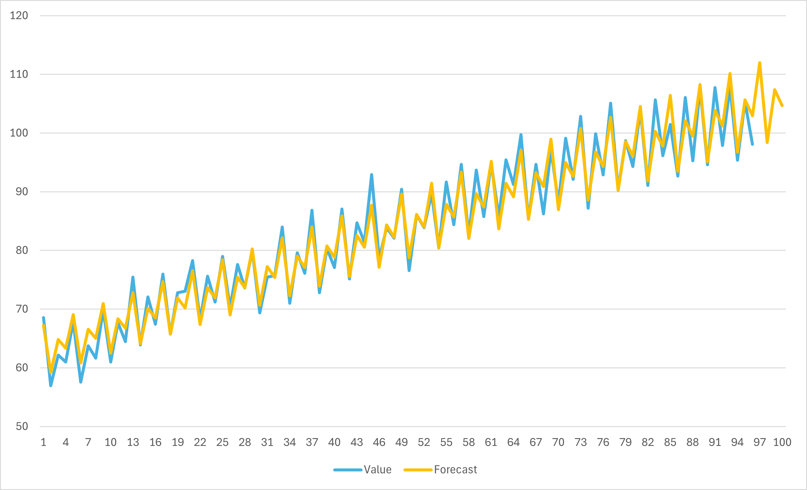

Centered Moving Average
Centered Moving Average adalah metode smoothing yang digunakan untuk menghilangkan noise dari data. Metode ini bekerja dengan cara mengambil rata-rata dari data yang ada di sekitar data yang akan dihitung. Misalnya, jika kita ingin menghitung data ke-5, maka kita akan mengambil data ke-3, ke-4, ke-5, ke-6, dan ke-7. Dengan demikian, kita bisa mendapatkan nilai rata-rata dari data tersebut.
Implementasi di Ms Excel
Gunakan template berikut sebagain demonstrasi: Template.xlsx
Berbeda dengan Exponential Smoothing, Centered Moving Average tidak memerlukan parameter tambahan. Kita hanya perlu menentukan berapa periode yang akan kita gunakan untuk menghitung rata-rata. Misalnya, kita akan menggunakan 5 periode.
Mulai dari baris n ke-3, nilai CMA (5) akan sama dengan nilai Value dari n-2 sampai n+2 (dari 1 sampai 5). Terapkan ini hingga n=94. Karena value hanya disiapkan hingga n ke-96
=AVERAGE(B2:B6)=
Selebihnya, proses penentuan Forecast akan sama dengan metode ES. Tentukan Value/CMA Ratio dengan rumus berikut:
\[Value/ES Ratio = \frac{Value}{CMA}\]Atau di Excel
=[@Value] / [@CMA]
Dapatkan value seasonality di Seasonality Table. Di Excel, terapkan formula berikut:
=AVERAGEIF($C$4:$C$95, [@Quarter], $F$4:$F$95)Note: Gunakan vlookup untuk memasukkan data seasonality ke table utama kita untuk mengisi kolom Seasonality.
=VLOOKUP([@Quarter],Seasonality_CMA,2,FALSE)
Kita juga akan menentukan value data yang sudah di-deseasonalize dengan rumus berikut:
\[Seasonalized Value = Value / Seasonality\]Atau di excel
=[@Value]/[@Seasonality]
Kita juga akan koefisien Intercept dan Variable dari data yang ada. Gunakan Data Analysis untuk menemukan nilai tersebut (lihat di materi sebelumnya)
Untuk menentukan nilai trendline, gunakan persamaan regression berdasarkan koefisien yang sudah ditentukan.
Ingat rumus regression
\[Y = a + bX\]dimana a adalah koefisien intercept dan b adalah koefisien variable. Sedangkan X adalah nilai yang akan dihitung (di kondisi ini adalah n)
Untuk forecast, kita bisa menggunakan rumus berikut:
\[Forecast = Trendline \times Seasonality\]
Jika semuanya sudah diisi dengan teliti, jika kita membuat grafik untuk mengetahui hubungan n terhadap Value dan forecast, kita akan mendapatkan hasil seperti berikut:
{kind=link}